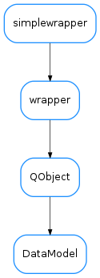

DataModel¶

-
class
DataModel(parent, dataUID, defaultData=None)[source]¶ Bases:
PyQt4.QtCore.QObjectAn object containing one piece of data which is intended to be shared. The data will be identified by its UID (a unique identifier known to objects that intend to access the data)
In general, you are not supposed to instantiate objects of this class directly. Instead, you should interact via the
SharedDataManager, which usesSharedDataManager.__getDataModel()to ensure that the DataModels are singletons.-
connectReader(slot, readOnConnect=True)[source]¶ Registers the given slot method to receive notifications whenever the data is changed.
Parameters: - slot (
callable) – a method that will be called when the data changes. This slot will be the receiver of a signal which has the data as its first argument. - readOnConnect (
bool) – if True (default) the slot will be called immediately with the current value of the data if the data has been already initialized
See also
- slot (
-
connectWriter(writer, signalname)[source]¶ Registers the given writer object as a writer of the data. The writer is then expected to emit a QtCore.SIGNAL(signalname) with the new data as the first parameter.
Parameters: - writer (
QObject) – object that will change the data - signalname (
str) – the signal name that will notify changes of the data
See also
- writer (
-
dataChanged¶
-
disconnectReader(slot)[source]¶ unregister a reader
Parameters: slot ( callable) – the slot to which this was connected
-
disconnectWriter(writer, signalname)[source]¶ unregister a writer from this data model
Parameters: - writer (
QObject) – object to unregister - signalname (
str) – the signal that was registered
See also
- writer (
-
isDataSet()[source]¶ Whether the data has been set at least once or if it is uninitialized
Return type: boolReturns: True if the data has been set. False it is uninitialized
-
readerCount()[source]¶ returns the number of currently registered readers of this model
Return type: intReturns:
-